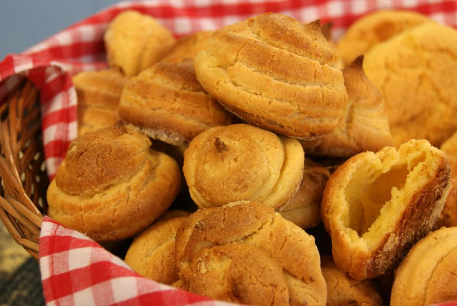

PRATOS 🍽️
O Bambá de Couve é um prato mineiro, que traz à mesa o sabor da tradição. Com couve finamente picada e uma base de polenta, é temperado com alho e cebola, criando um aroma que faz qualquer um se sentir em casa! Cada garfada é um abraço quente da cultura mineira, evocando memórias e aconchego, fazendo do bambá uma verdadeira expressão do carinho e da simplicidade da comida caseira!
O Feijão tropeiro é um clássico da culinária mineira que carrega a essência da hospitalidade e do afeto. Combinando feijão, farofa, linguiça e ovo, cada garfada é um verdadeiro festival de sabores que remete às tradições das troperias. O aroma convidativo e a textura reconfortante fazem desse prato uma lembrança calorosa das reuniões em família e dos almoços de domingo, onde cada porção é servida com amor e um toque de nostalgia!


O Feijão Preto é um ícone da cozinha mineira, que simboliza aconchego e sabor autêntico. Com sua textura cremosa e sabor marcante, é frequentemente temperado com alho, cebola e especiarias, trazendo à mesa um aroma que acolhe a todos. Esse prato, presente em muitas refeições familiares, é mais do que um alimento; é um laço afetivo que conecta gerações, evocando memórias de casa e do calor dos encontros à volta da mesa. Cada colherada é um convite para saborear a simplicidade e a riqueza da tradição mineira.
O Frango ao molho Pardo é uma iguaria marcante da culinária mineira, que revela a riqueza dos sabores caseiros. Preparado com frango cozido em um molho encorpado de sangue, temperos e especiarias, esse prato é uma verdadeira explosão de sabor que envolve a alma. Cada garfada traz à tona lembranças de almoços familiares e encontros calorosos, onde o aroma inebriante convida a todos a se reunir à mesa. O frango ao molho pardo é mais do que uma refeição; é uma tradição que une, aquece e nutre o coração mineiro.


O Frango com Quiabo é um prato acolhedor da cozinha mineira, que une suculentos pedaços de frango ao saboroso quiabo. Temperado com alho e cebola, seu aroma irresistível convida a família a se reunir à mesa. Cada garfada evoca memórias de laços afetivos, transformando essa iguaria em uma celebração do amor e da simplicidade da comida caseira.
O Frango com ora-pro-nobis é uma iguaria da culinária mineira que combina pedaços suculentos de frango com as nutritivas folhas da planta. Temperado com alho e especiarias, seu aroma inconfundível desperta o apetite e o carinho. Cada garfada traz à mesa memórias de família e o aconchego das refeições compartilhadas, celebrando a riqueza da terra e a simplicidade da cozinha caseira.

QUITANDAS 🍞

Ahh, o que falar do Pão de Queijo... Com certeza a primeira coisa que pensamos quando falamos em Minas Gerais! Crocante por fora, macio por dentro, cada mordida é um abraço caloroso que remete à simplicidade e ao carinho da culinária mineira! Feito com polvilho e queijo, seu aroma inconfundível desperta memórias de tardes em família e cafés compartilhados. O Pão de Queijo é muito mais que um lanche; é uma verdadeira tradição que aquece o coração.
A Broa é uma verdadeira joia da culinária mineira, com sua massa suave e levemente granulada, feita à base de fubá. Seu sabor levemente doce e o aroma convidativo trazem à tona lembranças de tardes na roça e cafés acolhedores. Simples e caseira, ela é um convite a momentos de pausa e reconforto, carregando consigo a tradição e o afeto da cozinha mineira.

O Biscoito de Polvilho é um clássico da culinária mineira, leve e crocante, perfeito para qualquer momento. Feito com poucos ingredientes, seu sabor simples e textura aerada são inconfundíveis, trazendo à tona memórias de infância e lanches da tarde. Fácil de encontrar em qualquer casa mineira, o biscoito de polvilho é um símbolo de aconchego e tradição, que transforma algo simples em uma experiência cheia de afeto.
A Rosca mineira é um símbolo de afeto e tradição, com seu formato trançado e sabor delicadamente adocicado. Feita com carinho, sua massa macia e levemente perfumada remete a cafés da manhã e lanches da tarde em família. O aroma que se espalha ao assar é um convite irresistível à mesa, trazendo uma sensação de acolhimento. Simples e caseira, a rosca é mais que um alimento, é uma parte essencial da cultura mineira que encanta e reconforta.


O Bolo de Fubá é um clássico da cozinha mineira que exala simplicidade e carinho. Com sua textura leve e o sabor suave do milho, ele traz o aconchego das receitas caseiras. Perfeito para acompanhar um café, o aroma do bolo de fubá saindo do forno é irresistível, remetendo a tardes tranquilas e encontros em família. É um prato que representa a tradição mineira, transformando momentos simples em memórias afetuosas e saborosas.
BEBIDAS ☕

O Café é a alma da mesa mineira, símbolo de hospitalidade e bons momentos. Com seu aroma forte e envolvente, ele desperta os sentidos e traz à tona a tradição de longas conversas acompanhadas de quitandas. Mais do que uma bebida, o café mineiro é um convite ao aconchego, transformando qualquer ocasião em um momento especial. Cada xícara reflete o calor das reuniões em família e o afeto presente em cada detalhe da cozinha caseira.
O Suco de Laranja é a refrescância perfeita da mesa mineira, com seu sabor cítrico e naturalmente doce. Espremido na hora, ele traz energia e leveza, complementando o calor das refeições caseiras. Sua acidez suave faz uma combinação deliciosa com o tradicional pão de queijo, criando um equilíbrio perfeito entre refrescante e reconfortante. Cada copo de suco de laranja carrega o frescor das frutas colhidas no quintal, tornando-se uma escolha simples, mas cheia de sabor e afeto.


O Suco de Uva é uma deliciosa expressão da riqueza das frutas mineiras, trazendo um sabor doce e encorpado que encanta o paladar. Com seu tom profundo e vibrante, é uma bebida que refresca e nutre, evocando memórias de tardes ensolaradas e colheitas em família. Feito com uvas frescas e naturais, seu aroma inconfundível preenche o ambiente, criando um convite irresistível à mesa. O suco de uva é mais do que uma bebida; é um toque de tradição e afeto que celebra a essência da culinária mineira, tornando cada gole uma celebração de sabor e aconchego.
RECEITAS ESPECIAIS 🍳

O Torresmo é um petisco irresistível e muito amado na culinária mineira, com seu sabor crocante e salgado que conquista a todos. Preparado na Airfryer, ele ganha uma versão mais leve, mantendo a crocância e o aroma inconfundíveis. Cada pedacinho é um convite à descontração, perfeito para acompanhar uma cervejinha ou ser o destaque de um aperitivo especial.
Clique na Imagem para acompanhar a receita!
O Bolinho de Carne moída simples é um clássico da culinária mineira, que traz conforto e sabor em cada mordida. Com uma mistura de carne moída, temperos e um toque de carinho, esses bolinhos são crocantes por fora e macios por dentro. O aroma que invade a casa durante o preparo é irresistível e evoca lembranças de almoços em família e reuniões descontraídas. Perfeitos como petisco ou acompanhamento, os bolinhos de carne moída são uma verdadeira tradição que encanta e satisfaz.
Clique na Imagem para acompanhar a receita!


A Canjica salgada com calabresa é uma iguaria que une o sabor da tradição mineira com um toque especial. Preparada com grãos de milho macios, ela ganha vida com a adição de calabresa defumada e temperos que intensificam seu sabor. O aroma envolvente que se espalha pela casa remete a encontros familiares e celebrações aconchegantes. Essa combinação deliciosa traz à mesa um prato reconfortante e cheio de personalidade, perfeito para aquecer o coração e satisfazer o paladar.
Clique na Imagem para acompanhar a receita!
A Vaca Atolada é um prato que exala o sabor da cozinha caipira, trazendo a combinação perfeita de
costela bovina cozida com pedaços generosos de mandioca. O caldo encorpado, resultado do cozimento
lento, se mistura com os temperos que perfumam a cozinha, criando um aroma irresistível. Cada garfada
é uma explosão de sabores, com a maciez da carne e o toque cremoso da mandioca. É uma comida que traz
conforto e a lembrança dos almoços de domingo, típica da tradição mineira.
Clique na Imagem para
acompanhar a receita!